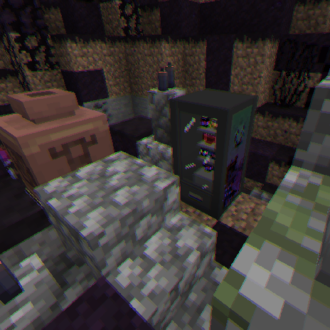

Global Impact
DESCRIPTION

Many people think that this whole corrupt quarantine thing is something “contained” or “associated” only to the valleys and spores.
But recent studies discovered that there are microscopic spores everywhere; you will inhale them without noticing, and that’s not only bad for your physical/mental health, but they can also damage animals, crops, and many other things that for the moment we are unaware of.
About mental health, we already have some documented cases of people who have suffered some effects derived from paranoia or even anxiety. We realized a study, and these are the symptoms that were most repeated:

Paranoia:
- A very loud noise that may startle you.
- A feeling that leaves you completely unsettled.
- A cacophony of sounds everywhere.
- In most cases, you may see a lot of things that do not exist in that situation (images, texts, etc.).
- A thick red fog that comes and goes, as if to intensify the effect.
- Dizziness and even vertigo.

Anguish:
- Feeling of pressure or heaviness.
- Intensified heartbeat.
- Feeling of tiredness.
- Feeling of not fitting in (and surely some kind of frustration related to this).
- Some have even experienced hallucinations of something or someone constantly harassing them in a blatant way.
It's important to stay medicated to avoid even worse consequences.
VEGETATION

We had several reports about many purple flowers scattered around the world; these plants are curved and resemble feathers. We nicknamed them “Corruptiny” due to their ability to spread their spores and generate “Corrupted Spores.” We have discovered that these plants are actually failed attempts by the “Ominous Valley” to expand, with its roots leading to the formation of these flowers. If you see any of these that aren't inside an “Ominous Valley,” it is best to rip it out as soon as possible, as they can cause many problems if they spread too far. Who knows what might happen?
RESEARCH ADVANCES


These kinds of… urinals? Let’s just name them “Anti-Monster Stations.” They can be found inside “Ominous Valleys” and “Hazed Plains” using their respective wood. These have very cool utility because they have the ability of making any threat lose sight of you when you’re hiding inside of it! But keep in mind that not every threat is affected; for example, “Deadtime Jones"—he's the rarest case because he normally loses sight, but if he sees you about to hide or you attack him before hiding, he will know you’re there, and he will literally break in.

In some ruins from both “Ominous Valleys” and “Hazed Plains,” we found these vending machines, which have a really sick jingle! Far from that, whoever made it surely was not human, because it is impossible to pick up and is somehow useful to protect yourself against some types of paranoid events. We already know 12 boosters related to these, and we also have to mention that whoever made these is a bastard! WHO MAKES A COOLDOWN OF 1 HOUR FOR A STUPID TIMED STATUS?!


Our researchers have been experimenting with the capabilities of the “Corrupted Arm.” Although it does not have many uses, the best use they have found for it is a creation they have decided to call the "Paranoia-Consumer Rod,” a rod that, when placed on top of certain logs, will perform one function or another.
- If it’s an “Ominous Log,” it will be able to highlight corrupted entities.
- If it’s a “Hazed Log,” it will repel any “Rottenmorphen” nearby.
- If it's a “Sinned Log,” it will reveal any Sinber nearby (it also reveals something else that we are still unaware of).

We have also found this kind of reinforcer that doesn’t seem to be that useful either, at least according to the tests our researchers have carried so far. The most incredible thing (if it can be described as such) has been a sword made up of a “Hornbranch” and a “Corrupted Arm” fused together by this reinforcer, a horrendous weapon that looks more like an aberration than anything else. It is quite strong but not very resistant. Something curious is that if you “flip it” and have “Corrupted Snowballs,” you will be somehow able to shoot them through the sword at high speed, which not only adds the effect but also causes more damage. Similarly, I feel that it is still a fairly useless item compared to other discoveries.
MUSIC
These tracks will play when Deadtime Jones has found you. |
KNOWN THREATS
DEADTIME JONES

[EXPERIMENT-3008] This creature has been massively reported; its behavior is most likely based on a larva or a parasite because it tends to hide inside the corpses of its victims and wait for prey to reveal it so he can hunt it down. However, he sometimes does not depend on a third person, because if he gets bored, he’ll simply reveal himself on his own.
This announcement is important for anyone who comes in contact with a live being with odd behavior. If the entity near you manifests any of these symptoms:
- Unusual breathing;
- Bleeding;
- Blank stares;
- Uncomfortable approaches;
Get rid of it as soon as possible. If that “thing” escapes, your only “dead time“ will be once he has already reached you.

Notice how the pig is the one infected in this photo.
(The fact that we used a pig
doesn't mean that HE can only hide on those...)